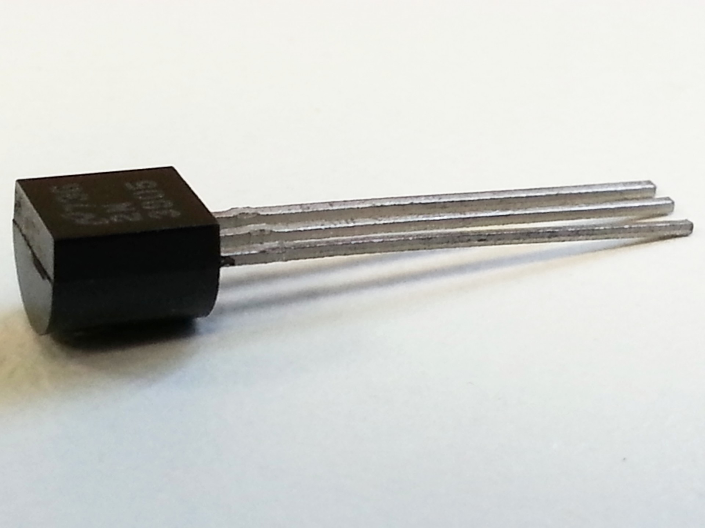

Advancements in Computers
Creation of a Key Computer Component
The Transistor

The transistor is an electronic device made for amplifying, controlling, and generating electric signals. A
transistor typically has 3 prongs, which serve as terminals for a connection between it and another circuit.
They are able to turn on and off incoming currents and can do so several billions of times a second. They
are usually constructed out of semiconductor materials such as silicon or germanium. The transistor is an
important advancement in the progression of computers because they sought to replace the mechanical relays
and bulky vacuum tubes of the first computers. These first computers were so large in part, because
they contained these massive vacuum tubes. The transistor removed the bulk and trimmed “excess fat” allowing
computers to be much smaller than they previously were. The transistor is the primary reason we can have
portable size computers, rather than an entire room filled with one.
In 1947, John Bardeen, Walter H,
Brattain, and William B. Shockley invented the device at AT&T’s Bell Laboratories in New Jersey. The
transistor was much more efficient than the vacuum tubes because they not only were smaller, but they
generated less heat, consumed lower power, and were much more reliable than the tubes inside the first
computers. The composition of the transistor continued to be refined, until engineers had discovered
semiconductor elements and compounds worked best for controlling electric currents. Eventually, in the 1960s
and 70s, transistors were combined with integrated circuits which made the chips quicker and able to handle
more tasks than previously possible.